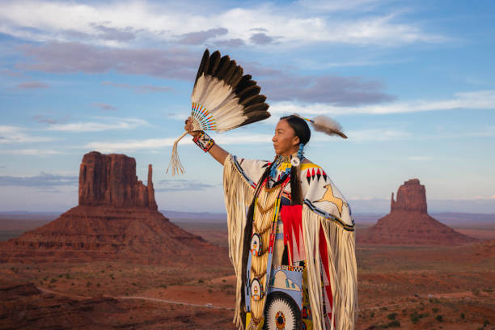
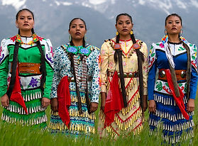

More Than Words: Keeping the Diné Language Alive
L2 · Flow and Layout Foundation: A Language That Carries a Culture

A language is strengthened not only by preserving its words, but by making room for people to use it.
Language is more than a way to exchange information. It can carry history, identity, relationships, and ways of understanding the world. For the Diné people, the Navajo language is part of a living cultural inheritance. It connects speakers and learners with family, community, place, and knowledge passed from one generation to another.
That connection is one reason language preservation matters. It is not only about recording vocabulary and grammar; it is also about creating opportunities to hear, speak, read, teach, and use the language in daily life.
Indigenous nations have distinct languages, histories, and cultural practices. This feature focuses on Diné Bizaad and Navajo Nation initiatives; it does not speak for Diné people or represent every Indigenous community. Language revitalization is shaped by the priorities of the people who carry the language.
L3 · Positioned Relationships: Passing Knowledge Between Generations

Families, fluent speakers, elders, educators, and community organizations can all contribute to language learning. Listening to fluent speakers offers examples of pronunciation and expression, while conversations and stories let learners practice with others.
Storytelling is one important way that many Indigenous communities pass knowledge between generations. The Smithsonian's National Museum of the American Indian explains that oral traditions can carry community histories, family experiences, cultural beliefs, and teachings. The museum also emphasizes that storytelling traditions belong to particular Native communities and should be understood in their specific contexts. This broader resource helps explain why language and oral knowledge are closely connected, but it should not be mistaken for a description of every Diné teaching or story.
Learning can happen at home, in classrooms, and through community programs. These settings can complement one another, but no classroom, app, or institution can replace the relationships and lived knowledge of people who speak and teach Diné Bizaad.
For learners, progress may begin with small steps: practicing sounds, listening to a story, asking a relative about a phrase, or using familiar words in an everyday exchange.
A Public Commitment to Diné Bizaad
Language preservation also involves public institutions. On December 24, 2024, Navajo Nation President Buu Nygren signed Resolution CD-52-24, establishing Diné Bizaad as the official language of the Navajo Nation. The Navajo Nation's announcement described the legislation as a step toward ensuring that the language is used, taught, and supported. The resolution added a chapter on the official language to Title 1 of the Navajo Nation Code.
On January 14, 2025, the President issued Executive Order 01-2025 to direct executive branch divisions, departments, commissions, offices, and programs to implement Diné Bizaad as the Nation's official language. The order included actions such as incorporating at least one Diné Bizaad word or phrase into written documents, exploring language-learning opportunities for staff, and assessing bilingual government and street signage.
These actions can create more public opportunities to encounter the language. An official designation, however, is not the same as everyday fluency; long-term strength also depends on teaching, resources, and meaningful opportunities to use Diné Bizaad.
Learning Today: Stories, Audio, and Access
Digital resources can offer another path into language learning, especially for people who want to listen and practice outside a classroom. In January 2026, the Office of the President and Vice President of the Navajo Nation announced a public online Diné Bizaad learning resource. The initiative features original monthly stories in Diné Bizaad paired with audio, allowing learners to hear pronunciation, rhythm, and meaning from fluent speakers.
The resource supports listening, reading, and everyday language use. The Navajo Nation says it plans to add vocabulary connected to daily life and conversational language materials. Learners can consult the original stories and hear the language directly.
Technology can widen access, but it supports rather than replaces human learning. Audio and online stories can be replayed for practice, while conversations with fluent speakers and community educators remain important.
Readers interested in learning more can visit the Navajo Nation's Diné Bizaad learning resource, which includes stories and audio. The page is a starting point for listening and practice, not a substitute for community-led learning or instruction.
Keeping the Language Alive
Cultural preservation is ongoing work. Government initiatives can establish commitments, schools and digital resources can make materials accessible, and families and fluent speakers can create opportunities to use the language. Each effort depends on continued participation and support.
The future of Diné Bizaad is not only about remembering the past. It also means making space for the language in homes, classrooms, community settings, and public life. Listening to a story or practicing a phrase can contribute to that effort.
More than words, Diné Bizaad is a living connection among people, knowledge, and community. Supporting that connection means respecting the leadership of Diné people and recognizing that the language's future belongs to the generations who continue to speak it, teach it, learn it, and carry it forward.